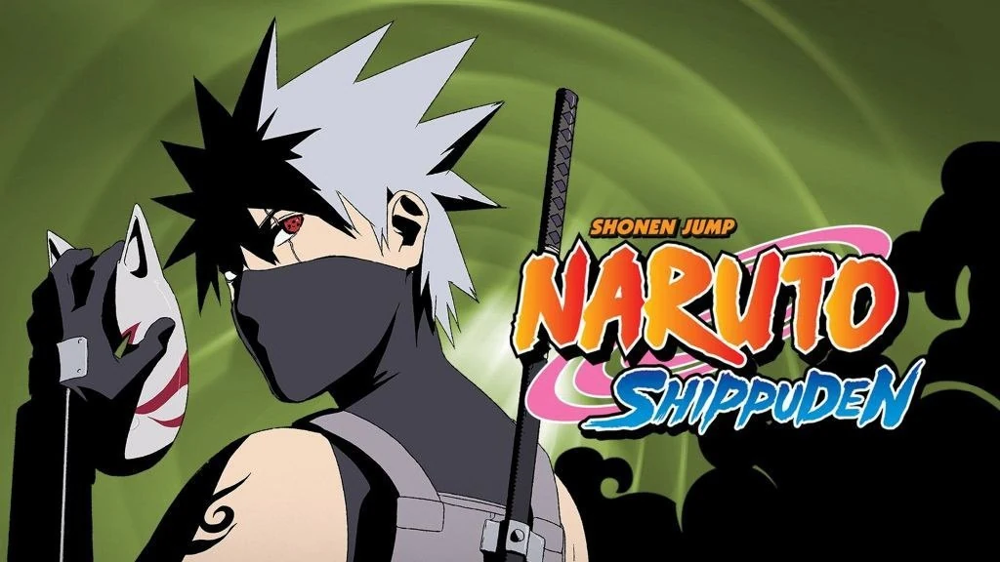
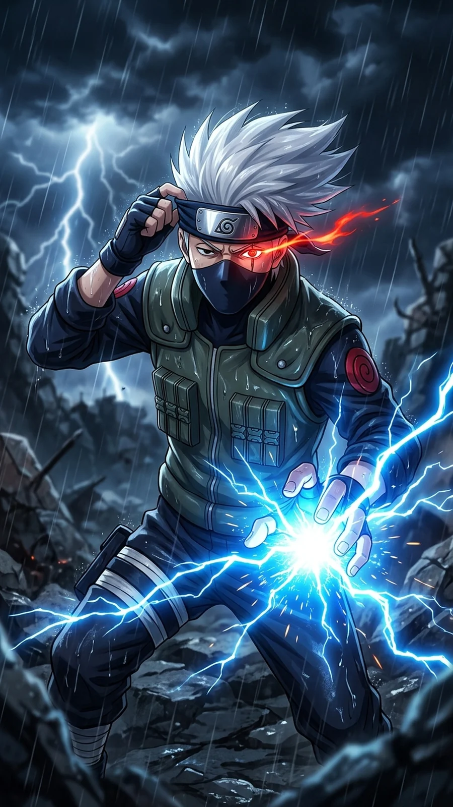

Naruto Shippuden Part 8: Seasons 12-13 (Episodes 243-295) - Every Episode Explained

Last updated: 20 October 2026
This is Part 8 of the complete Naruto Shippuden episode-by-episode guide, covering Seasons 12 and 13 - Episodes 243 to 295. This is where the Fourth Great Ninja War actually starts, after Naruto finally learns to control the Nine-Tails.
At a glance
- Episodes: 243-295 (53 episodes)
- Season 12: Nine-Tails Taming and Karmic Encounters - episodes 243-275 - mostly canon
- Season 13: The Seven Shinobi Swordsmen + Power arc - episodes 276-295 - mixed
- Aired: 5 January 2012 - 10 January 2013
- Season 12 score: 9/10 · Season 13 score: 7/10
Season 12 contains two of the best episodes in the entire franchise - Naruto meeting his parents - and then pivots straight into the war. Season 13 is uneven: the Seven Ninja Swordsmen stretch is solid, and the anime-original Power arc is unusually good for filler.
Every episode explained
Episode 243: Land Ahoy! Is this the Paradise Island?
Naruto and Yamato reach the island Naruto has been told is his mission. It is not a mission.
Note: The truth is kept from Naruto, which sets up his arc for the season.
Episode 244: Killer Bee and Motoi
Killer B is introduced properly, and Motoi's history with him is told.
Note: Killer B is the best new character in the war arc.
Episode 245: The Next Challenge! Naruto vs. The Nine Tails
Naruto begins training to control the Nine-Tails with Killer B's help.
Note: The start of the best training arc of the war.
Episode 246: The Orange Spark
Naruto struggles against the Nine-Tails' hatred, and the reason he keeps failing is explained.
Note: Sets up the payoff.
Episode 247: Target: Nine Tails
The Nine-Tails fights back with everything it has.
Note: A strong internal-conflict episode.
Episode 248: The Fourth Hokage's Death Match!
Naruto meets his mother, Kushina, inside his own mind, and she tells him the story of the night he was born.
Note: One of the best episodes in the entire series.
Episode 249: Thank You
Kushina's story concludes and Naruto finally understands what his parents gave him.
Note: The emotional peak of the season.
Episode 250: Battle in Paradise! Odd Beast vs. The Monster!
Kisame is revealed to have been hiding inside the sword.
Note: A good twist.
Episode 251: The Man Named Kisame
Kisame's past and his loyalty to the Akatsuki are explored before his end.
Note: A villain who earns his exit.
Episode 252: The Angelic Herald of Death
Konan's history and her decision are told.
Note: Konan finally gets her due.
Episode 253: The Bridge to Peace
Konan fights Tobi over Nagato's legacy.
Note: A short, sharp fight.
Episode 254: The Super Secret S-Rank Mission
A light episode about a mission the characters have to keep secret.
Note: Filler relief before the war.
Episode 255: The Artist Returns
Deidara and Sasori are brought back by the reanimation jutsu.
Note: A great callback.
Episode 256: Assemble! Allied Shinobi Forces!
The Allied Shinobi Forces assemble for the first time, and the war formally begins.
Note: A big, satisfying moment.
Episode 257: Meeting
The first of four recap episodes looking back at Naruto and Sasuke from the original series.
Note: Recap. Skippable if you remember Part 1.
Episode 258: Rivals
The recap continues.
Note: Recap.
Episode 259: Rift
The recap continues.
Note: Recap.
Episode 260: Parting
The recap concludes at the Valley of the End.
Note: Recap.
Episode 261: For My Friend
The war's first real battle begins, and the stakes are set.
Note: Back to the plot.
Episode 262: War Begins
The war opens properly across multiple fronts.
Note: Good scale.
Episode 263: Sai and Shin
Sai faces his reanimated brother, Shin.
Note: The best emotional beat of the early war.
Episode 264: Secrets of the Reanimation Jutsu
The mechanics of the reanimation jutsu are explained.
Note: Important lore.
Episode 265: An Old Nemesis Returns
Zabuza and Haku are reanimated and forced to fight.
Note: A painful callback to Part 1.
Episode 266: The First and Last Opponent
Kakashi faces Zabuza and Haku again, and the fight is handled with real care.
Note: One of the best war episodes.
Episode 267: The Brilliant Military Advisor of the Hidden Leaf
Shikamaru takes command of a division and shows why he is the smartest person on the field.
Note: Shikamaru in his element.
Episode 268: Battleground!
Multiple divisions fight across the battlefield at once.
Note: Good breadth.
Episode 269: Forbidden Words
A squad is forced to fight without saying what they cannot say.
Note: A clever premise.
Episode 270: Golden Bonds
Naruto's Nine-Tails chakra reaches the battlefield for the first time.
Note: A big moment.
Episode 271: Road to Sakura
A side-story episode set outside the main war.
Note: Filler, but short.
Episode 272: Mifune vs. Hanzo
Mifune faces the reanimated Hanzo, and their shared past is told.
Note: A strong one-off fight.
Episode 273: True Kindness
The theme of the war - what kindness costs - is explored.
Note: Quiet and effective.
Episode 274: The Complete Ino-Shika-Cho Formation!
Team 10 finally performs the complete Ino-Shika-Cho formation.
Note: A payoff decades in the making.
Episode 275: A Message from the Heart
A letter ties together a soldier and his family.
Note: Sentimental, but it works.
Episode 276: Attack of the Gedo Statue
The Gedo Statue enters the battlefield and changes the balance.
Note: Escalation.
Episode 277: Unison Sign
The allied forces regroup and coordinate.
Note: Setup.
Episode 278: Medic Ninja in Danger
Sakura and the medical corps come under attack.
Note: Sakura gets real work to do.
Episode 279: White Zetsu's Trap
The White Zetsu infiltration is discovered.
Note: Good paranoia.
Episode 280: Aesthetics of an Artist
Deidara fights again, still obsessed with his art.
Note: Deidara remains entertaining.
Episode 281: The Allied Mom Force!!
A light episode about the mothers of Konoha defending the village.
Note: Comedy filler.
Episode 282: The Secret Origin of the Ultimate Tag Team!
The origin of a famous duo is told.
Note: Filler.
Episode 283: Two Suns
Two fighters who mirror each other face off.
Note: Decent.
Episode 284: The Helmet Splitter: Jinin Akebino!
One of the Seven Ninja Swordsmen is reintroduced.
Note: The Swordsmen arc begins.
Episode 285: User of the Scorch Style: Pakura of the Sand!
Pakura fights and her story is told.
Note: One of the better Swordsmen episodes.
Episode 286: Things You Can't Get Back
The cost of the war is felt by the characters.
Note: Sombre.
Episode 287: One Worth Betting On
A character proves their worth on the battlefield.
Note: Solid.
Episode 288: Danger: Jinpachi and Kushimaru!
Two Swordsmen fight as a pair.
Note: Action.
Episode 289: The Lightning Blade: Ameyuri Ringo!
Ameyuri Ringo faces Omoi, and their fight is one of the best of the arc.
Note: A standout Swordsmen episode.
Episode 290: Power - Episode 1
A six-part anime-original story begins, set in a village built on a secret.
Note: The Power arc is filler, but it is beautifully animated.
Episode 291: Power - Episode 2
The Power story continues.
Note: Strong animation.
Episode 292: Power - Episode 3
The Power story continues.
Note: Well-directed.
Episode 293: Power - Episode 4
The Power story continues.
Note: One of the better filler arcs.
Episode 294: Power - Episode 5
The Power story continues.
Note: Good.
Episode 295: Power - Final Episode
The Power arc concludes, and the story returns to the war.
Note: A strong end to a rare good filler arc.

Part 8 verdict
Episodes 245 to 249 are essential. Naruto meeting Kushina and learning what happened the night he was born is the emotional foundation the whole war arc rests on. Episodes 263 to 266, where Sai and Kakashi face reanimated people they loved, are the best war episodes of the season.
Episodes 257 to 260 are a recap of the original series, so skip them if you have already watched Part 1. The Power arc (290-295) is filler, but it is the best-looking filler in Shippuden and worth a look.
Overall: 8.5/10. Strong canon with a well-animated filler detour.

Next in this series
Continue the episode-by-episode guide with the next part.